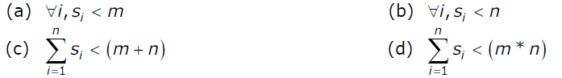

A process in operating systems uses different resources and uses resources in following way.
1) Requests a resource
2) Use the resource
2) Releases the resource
Deadlock is a situation where a set of processes are blocked because each process is holding a resource and waiting for another resource acquired by some other process.
Consider an example when two trains are coming toward each other on same track and there is only one track, none of the trains can move once they are in front of each other. Similar situation occurs in operating systems when there are two or more processes hold some resources and wait for resources held by other(s). For example, in the below diagram, Process 1 is holding Resource 1 and waiting for resource 2 which is acquired by process 2, and process 2 is waiting for resource 1.

Deadlock can arise if following four conditions hold simultaneously (Necessary Conditions)
Mutual Exclusion: One or more than one resource are non-sharable (Only one process can use at a time)
Hold and Wait: A process is holding at least one resource and waiting for resources.
No Preemption: A resource cannot be taken from a process unless the process releases the resource.
Circular Wait: A set of processes are waiting for each other in circular form.
Methods for handling deadlock
There are three ways to handle deadlock
1) Deadlock prevention or avoidance: The idea is to not let the system into deadlock state.
2) Deadlock detection and recovery: Let deadlock occur, then do preemption to handle it once occurred.
3) Ignore the problem all together: If deadlock is very rare, then let it happen and reboot the system. This is the approach that both Windows and UNIX take.
Exercise:
1) Suppose n processes, P1, …. Pn share m identical resource units, which can be reserved and released one at a time. The maximum resource requirement of process Pi is Si, where Si > 0. Which one of the following is a sufficient condition for ensuring that deadlock does not occur? (GATE CS 2005)

(A) A
(B) B
(C) C
(D) D
For solution, see Question 4 of https://www.geeksforgeeks.org/operating-systems-set-16/
See QUIZ ON DEADLOCK for more questions.
References:
http://www2.latech.edu/~box/os/ch07.pdf
http://www.cs.uic.edu/~jbell/CourseNotes/OperatingSystems/7_Deadlocks.html